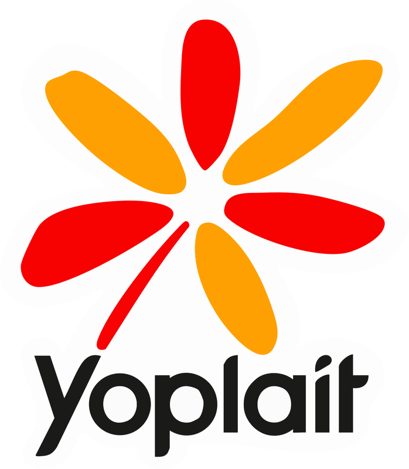

요플레 Yoplait
요플레(Yoplait)는 프랑스의 디저트 기업이자 세계 최대 규모의 요구르트 프랜차이즈 브랜드이다. 프랑스 낙농 협동조합 Sodiaal이 2021년부터 전액 소유하고 있다.
최종 업데이트

요플레는 어떤 브랜드인가
요플레는 프랑스에서 출발한 요구르트 브랜드로, 영문 자료는 이 브랜드를 세계 최대의 요구르트 프랜차이즈 브랜드로 설명한다. 본사는 불로뉴비양쿠르에 있으며 설립 연도는 1965년이고 모기업은 프랑스 낙농 협동조합 Sodiaal이다.
프랑스에서는 Yoplait France가 브랜드를 관리하고, 멕시코에서는 Sigma Alimentos가, 칠레에서는 Quillayes가 관리한다. 호주에서는 Bega Dairy & Drinks가 제조하고, 뉴질랜드에서는 Goodman Fielder가 제조해 프랜차이즈로 운영한다.
이스라엘에서는 Tnuva가 브랜드를 관리하며 제품은 코셔이다. 2021년부터 Sodiaal이 브랜드를 전액 소유하며, 2025년에는 캐나다 법인도 Sodiaal이 인수했다.
요플레는 어떻게 시작되고 성장했나
1964년 프랑스 농민 10만 명이 여섯 개 지역 낙농 협동조합을 합치기로 합의했다. 전국 단위로 제품을 더 효율적으로 판매하기 위해서였다.
1965년 9월 25일 새 전국 브랜드로 요플레가 출시되었으며, 이름은 회원 협동조합 두 곳의 브랜드인 Yola와 Coplait를 합친 말이다. 로고는 Philippe Morlighem이 디자인한 여섯 장 꽃잎의 꽃으로, 꽃잎은 각각 여섯 주요 협동조합의 설립자를 뜻한다.
2000년대 후반부터 점차 적용된 새 로고는 꽃잎이 다섯 장이다.
요플레의 브랜드 아이덴티티는 무엇인가
여섯 개 지역 협동조합이 합쳐 1965년에 출시한 프랑스 요구르트 브랜드로, 각국 현지 업체가 관리하는 프랜차이즈 구조가 특징이다.
요플레의 대표 제품과 서비스는 무엇인가
캐나다에서는 General Mills가 미리 저어 놓은 형태의 Yoplait 요구르트와 Minigo, Tubes, Source, Creamy, Delicieux, Yop, Yoplait Basket, Yoptimal, Asana를 판매했다. 이스라엘에서는 100그램 샷 형태 병에 담은 마시는 요구르트가 있으며, Tnuva는 2009년에 재밀봉 용기에 담은 500그램 가족용 제품 Yoplait YYY를 내놓았다.
이스라엘에서 Yoplait 브랜드의 가향 요구르트는 시장의 42~52%를 차지한다.
요플레는 지금 어떤 상태인가
2021년 11월 30일 General Mills가 지분을 Sodiaal에 되팔아 Sodiaal이 전액 소유하게 되었다. General Mills는 2011년에 주 운영 회사 Yoplait S.A.S.의 지분 51%를 인수했었다.
2025년 1월 General Mills가 캐나다 요구르트 사업을 Sodiaal에 매각했고, 미국 법인 Yoplait USA는 같은 해 6월 30일 프랑스 Lactalis가 인수했다.
요플레 로고는 어떻게 변해왔나
자주 묻는 질문
요플레는 어느 나라 브랜드인가요?
요플레는 프랑스의 식음료 브랜드입니다.
요플레는 언제 설립되었나요?
요플레는 1965년 설립되었습니다.
요플레의 브랜드 아이덴티티는 무엇인가요?
여섯 개 지역 협동조합이 합쳐 1965년에 출시한 프랑스 요구르트 브랜드로, 각국 현지 업체가 관리하는 프랜차이즈 구조가 특징이다.
요플레의 대표 제품은 무엇인가요?
캐나다에서는 General Mills가 미리 저어 놓은 형태의 Yoplait 요구르트와 Minigo, Tubes, Source, Creamy, Delicieux, Yop, Yoplait Basket, Yoptimal, Asana를 판매했다.
요플레는 어느 기업이 소유하고 있나요?
2021년 11월 30일 General Mills가 지분을 Sodiaal에 되팔아 Sodiaal이 전액 소유하게 되었다.
요플레의 본사는 어디에 있나요?
요플레의 본사는 불로뉴비양쿠르에 있습니다(위키데이터 기준).
요플레의 공식 웹사이트는 어디인가요?
요플레의 공식 웹사이트는 https://www.yoplait.com/ 입니다.
출처와 검증
요플레 관련 참고: 공식 웹사이트 · 위키데이터 Q1068102 · 한국어 위키백과 · 영어 위키백과. 브랜드명은 한글과 원어를 함께 표기하되 데이터에 없는 표기는 만들지 않습니다. 기원 국가·설립연도는 검수된 정의문에서 확인된 값을 우선하고, 없을 때만 공식 웹사이트 URL이 일치하는 위키데이터 개체의 값을 씁니다. 웹 첫 보관은 인터넷 아카이브가 공식 사이트 첫 화면을 처음 보관한 날로, 사이트 개설일과 다를 수 있습니다. 위키데이터 값은 2026-11-07 기준입니다.